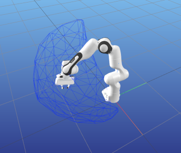

Reachable Space with Pinocchio and CGAL

This is an example tutorial of how to setup pinocchio and CGAL library with pycapacity to calculate and visualise the robot capacities

Installing Pinocchio
Pinocchio library can be downloaded as sa pip package however due to the large number of different dependencies we suggest you to use anaconda.
Pip package install
Install the pinocchio library
pip install pin
Install an additional library with robot data example_robot_data provided by pinocchio community as well more info
pip install example-robot-data
Install the visualisation library meshcat that is compatible with pinocchio simple and powerful visualisaiton library more info
pip install meshcat
Then install CGAL library for the workspace analysis
pip install cgal
Finally install pycapacity for the workspace analysis
pip install pycapacity
Also you can install ipython of jupyter for simplicity.
Anaconda install
For anaconda instals you can simply download the yaml file and save it as env.yaml:
name: rwspace
channels:
- defaults
- conda-forge
dependencies:
- python
- conda-forge::pinocchio
- conda-forge::gepetto-viewer
- conda-forge::gepetto-viewer-corba
- conda-forge::example-robot-data
- conda-forge::meshcat-python
- pip:
- pycapacity
- cgal
And create a new ready to go environment:
conda env create -f env.yaml # create the new environemnt and install pinocchio, gepetto, pycapacity,..
conda actvavte rwspace
Creating the custom environment from scratch
You can also simply use anaconda to create a new custom environment:
conda create -n rwspace python=3 pip # create python 3.8 based environment
conda activate rwspace
Install all the needed packages
conda install -c conda-forge pinocchio
conda install -c conda-forge example-robot-data
conda install -c conda-forge gepetto-viewer
Then install CGAL library for the workspace analysis
pip install cgal
Then install pycapacity for the workspace analysis
pip install pycapacity
Code example
This example code calculates the reachable space of the panda robot (in a random joint configuration) and visualises it using meshcat.
import pinocchio as pin
import numpy as np
import time
from example_robot_data import load
robot = load('panda')
# Display a robot configuration.
# q0 = pin.neutral(robot.model)
q0 = robot.q0
# calculate the jacobian
data = robot.model.createData()
pin.framesForwardKinematics(robot.model,data,q0)
# set the time-horizon
horizon_time = 0.2 # secs
# create a simple forward kinematics function
# taking the current joint configuration q
# and outputting the end-effector position
def fk(q):
pin.framesForwardKinematics(robot.model,data,q)
return data.oMf[robot.model.getFrameId(robot.model.frames[-1].name)].translation
# polytope python module
import pycapacity.robot as pycap
# get max torque
q_max = robot.model.upperPositionLimit.T
q_min = robot.model.lowerPositionLimit.T
# get max velocity
dq_max = robot.model.velocityLimit
dq_min = -dq_max
# set a random joint configuration
q = np.random.uniform(q_min,q_max)
opt = {
'calculate_faces': True,
'convex_hull': False, # if True, the reachable space will be approximated with a convex hull of the vertices (does not require CGAL)
'n_samples':3, # number of samples per dimension of the facet (the higher the better the approximation - n_samples^facet_dim samples)
'facet_dim':2 # dimension of the joint-space facet to be sampled (0 for vertices, 1 for edges, 2 for faces, up to n_dof -1, where n_dof is the number of degrees of freedom)
}
# calculate force polytope
rw_poly = pycap.reachable_space_nonlinear(
forward_func=fk,
q0=q,
q_max= q_max,
q_min= q_min,
dq_max= dq_max,
dq_min= dq_min,
time_horizon=horizon_time,
options=opt
)
## visualise the robot
from pinocchio.visualize import MeshcatVisualizer
viz = MeshcatVisualizer(robot.model, robot.collision_model, robot.visual_model)
# Start a new MeshCat server and client.
viz.initViewer(open=True)
# Load the robot in the viewer.
viz.loadViewerModel()
viz.display(q)
# small time window for loading the model
# if meshcat does not visualise the robot properly, augment the time
# it can be removed in most cases
time.sleep(0.2)
## visualise the polytope and the ellipsoid
import meshcat.geometry as g
# meshcat triangulated mesh
poly = g.TriangularMeshGeometry(vertices=rw_poly.vertices.T, faces=rw_poly.face_indices)
viz.viewer['rwspace'].set_object(poly, g.MeshBasicMaterial(color=0x0022ff, wireframe=True, linewidth=3, opacity=0.2))
Here is the visualisation of the reachable space of two different runns of the code:
 
Animate polytopes in Meshcat
This example code calculates the reachable space of the panda robot for a sinusoidal motion and visualises it using meshcat.
import pinocchio as pin
import numpy as np
from example_robot_data import load
# get panda robot usinf example_robot_data
robot = load('panda')
# get joint position ranges
q_max = robot.model.upperPositionLimit.T
q_min = robot.model.lowerPositionLimit.T
# get max velocity
dq_max = robot.model.velocityLimit
dq_min = -dq_max
# Use robot configuration.
q = (q_min+q_max)/2
## visualise the robot
from pinocchio.visualize import MeshcatVisualizer
viz = MeshcatVisualizer(robot.model, robot.collision_model, robot.visual_model)
# Start a new MeshCat server and client.
viz.initViewer(open=True)
# Load the robot in the viewer.
viz.loadViewerModel()
viz.display(q)
import pycapacity.robot as pycap
import meshcat.geometry as g
# set the time-horizon
horizon_time = 0.2 # secs
# create a simple forward kinematics function
# taking the current joint configuration q
# and outputting the end-effector position
def fk(q):
pin.framesForwardKinematics(robot.model,data,q)
return data.oMf[robot.model.getFrameId(robot.model.frames[-1].name)].translation
opt = {
'calculate_faces': True,
'convex_hull': False, # if True, the reachable space will be approximated with a convex hull of the vertices (does not require CGAL)
'n_samples':2, # number of samples per dimension of the facet (the higher the better the approximation - n_samples^facet_dim samples)
'facet_dim':1 # dimension of the joint-space facet to be sampled (0 for vertices, 1 for edges, 2 for faces, up to n_dof -1, where n_dof is the number of degrees of freedom)
}
while True:
# some sinusoidal motion
for i in np.sin(np.linspace(-np.pi,np.pi,200)):
# update the joint position
q[0] = i
q[1] = i
q[2] = i
# calculate the jacobian
data = robot.model.createData()
# calculate force polytope
rw_poly = pycap.reachable_space_nonlinear(
forward_func=fk,
q0=q,
q_max= q_max,
q_min= q_min,
dq_max= dq_max,
dq_min= dq_min,
time_horizon=horizon_time,
options=opt
)
# visualise the robot
viz.display(q)
# meshcat triangulated mesh
poly = g.TriangularMeshGeometry(vertices=rw_poly.vertices.T, faces=rw_poly.face_indices)
viz.viewer['rwspace'].set_object(poly, g.MeshBasicMaterial(color=0x0022ff, wireframe=True, linewidth=3, opacity=0.2))

📢 NEW Examples!
- For some more examples check out the
examplesfolder of the repository. Interactive jupyter notebooks are available in the
examples/notebooksfolder: see on Github velocity polytope and reachable space polytopePython scripts are available in the
examples/scriptsfolder: see on Github